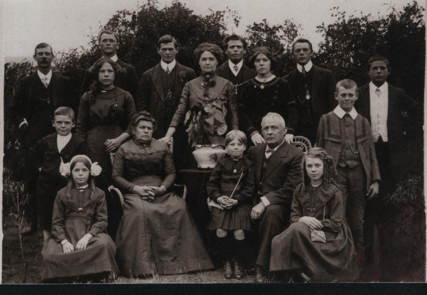

Back row: Fred Scott, Percy Pearce, Oliver Pearce, Harold Pearce, Sid
Pearce, Ernie Pearce
Middle row: Cyril Scott, May Pearce, Lily Scott, Maudie Pearce, Arnie Scott
Front row: Linda Pearce, Caroline Pearce, Olive Scott,
Edwin William Pearce, Alice Scott
Dear grandmother,
We have never met, you and I. By the time I was born,
you had been dead for 18 years, so you never held me and I never knew
what it was like to have a grandmother’s love and attention. Now, over 80
years since you died, I want to know who you were and what life was like
for you in the years you lived. My mother – your daughter Olive – was
barely 14 when you died and told me little about you, just that you died
in the influenza epidemic of 1919. Recent conversations with other family
members suggest that Mum either did not know differently or was less than
honest about the circumstances of your death. Knowing Mum’s style, I can well believe that it was a mixture of denial and of ‘not
speaking ill of the dead’.
Grandmother, I want to try to paint a portrait of you
as a young woman. I am going to have to rely on bits and pieces to
assemble this portrait – Mum’s limited stories, hints and whispers of oral
history that consistency has firmed into fact, historical records, and
what I can guess at from the few family photographs I have been able to
gather. When I have finished, I will not be able to know how closely the
picture I have drawn fits. If it is too fanciful, and especially if it is
too unkind, please forgive me, but I want to bring you out of the shadowy
one-dimensional figure of my mother’s report, and give you to your
descendants as flesh and blood. For certainly, if the stories I have heard
are even partly true, there was fire in you and it was passion, not
influenza, that carried you to any early grave.
Let me begin with your times. Your Adelaide would have
been a very different place from mine. We would each have known the neat
grid of Adelaide’s streets laid out by Colonel William Light, and the
parklands would have ringed the city then as now. But the streets of your
girlhood would not have been lit by electric light. That didn’t happen
until 1900, by which time you were married with two children. You would
have heard the debates about Federation and would have seen the birth of
the Commonwealth of Australia in 1901. The school leaving age was 13. I
wonder if, like many young women of your time, you left school to help
your mother care for your eight younger brothers and sisters.
The earliest photograph I have of you
is a carefully posed one taken in 1911
when you were 30 years old. You are sitting under some kind of fruit tree,
looking at my mother, Olive is standing on a
chair, picking fruit. Olive is wearing a pretty white dress with
lace at the hem, and her hair hangs down in ringlets. You have a book open
in your lap, and your right hand is placed pensively under your chin. You
are wearing a dark-coloured dress with a broad white lace collar and your
hair is piled on top of your head in the fashion of the day. Your figure
is slim. I try to interpret your expression – a half-smile indicates
affection for your daughter, but there is a hint of sadness about the
eyes, and the suggestion of a frown.
It is not hard to imagine you as 15. You would have
been slim and vivacious and men would have found you attractive. Some time
in 1897, you must have met Fred Scott, a small, neat man, quick in his
movements, with a fetching smile and an engaging sense of humour. Before
the end of the year a serious relationship had developed between you two
for, on 25th August 1898, you and he were married. Twenty-four
hours Alice May Scott was born.
When did your parents find out that you were pregnant?
The fact that Alice’s birth is recorded as a mere day after your wedding
suggests some possible answers. One is that you were able to hide the fact
of your pregnancy until the last moment and that hasty preparations for
marriage were made, getting you to the church just on time. Another is
that it wasn’t until Alice was actually born that things came to light
and, as was not uncommon, the birth was not registered until some days
later, a kindly Registrar making Alice’s arrival ‘legitimate’.
It's also possible that there has been a transcription
error in recording dates but, whatever
the story, you were a mother and wife by the age of 16 years and 5 months.
Fred was 20. Sixteen months later, Arnie was born - on New Years’ Day,
1900 - followed by Cyril in March, 1902 and Olive in March, 1905. All the
Pearce sons were butchers, so it is possible that Fred was taken into the
family business. As a small child I can recall visiting Grandpa Fred’s
shop and receiving the traditional slice of bung fritz.
Now we come to the ‘potted palm’ photo. The whole
Pearce family is assembled. The rather dignified-looking grandfather,
Edwin William and the decidedly sour-looking grandmother, Carry, are
seated at the front. Edwin has his arm around my mother, who is about 5 or
6 years old. You are standing centrally, flanked by your heavy-browed
brothers and your sister Maudie. Fred appears to be marginalised at the
extreme left of the photo. You still look strikingly attractive – a little
fuller in the face and figure than two years before, but you still command
attention. You have your hand placed on the back of your mother’s chair.
It is easy to imagine that you are trying to make contact, to gain her
approval. A table with a potted palm is strategically placed in front of
your stomach. You are pregnant again - but not by your husband.
Recently – who can say when – you have begun an affair
with a family friend and the child in your womb is his. This seems to have
been known by all the family. How did it come to light? Did you confess?
Were you and Fred no longer intimate? Were you and your lover caught in
flagrante? In 1915, young Lily is born, half-sister to my mother. She
is brought up in the family but taunted by her eldest sister over her
parenthood.
In 1914, war was declared in Europe. Fred enlisted
in the Catering Corps and was sent to France. It has been suggested that
part of his motivation was your love affair: that he was hurt and wanted
some distance. Perhaps he hoped that your ardor for your lover would cool.
If so, it appears that he was wrong.
‘It was very sad,’ my mother told me of your death. ‘My
father only three weeks home from the War and mother dead in the influenza
epidemic. I was forced to go to her funeral,’ she continued, ‘and they
made me go up and kiss my mother in her coffin. It was horrible! I will
never go to another funeral again.’
The story I have received from my mother’s cousin is
quite different. ‘I was staying with your grandmother at the time, she
told me. I loved staying with Auntie Lily. Your Mum was my favourite
cousin and she and I spent a lot of time together. Your grandmother was
ill in bed, and young Lily came and took me out to the laundry. "Look at
what they’ve taken from my mother", she said, and showed me a basin of
blood. We were shooed away. It seems that when Fred came home from France,
he found that the affair hadn’t cooled and that Lily was pregnant again.
Maybe your grandmother died from the ‘flu but, more likely, from a
haemorrhage brought on by a botched abortion attempt.’
Is that true, grandmother? Is this more lurid story of
your death accurate? Would my mother have known and deliberately distorted
the story? Or would the facts have been hidden from her? It would be
consistent with my mother’s style, using denial to deal with unpleasant
information. It would also offer some explanation for my mother’s rather
modest attitude towards sex. Alternatively, perhaps you did die of
influenza and your niece’s story is a fabrication. Whatever is true,
please forgive me if I lean towards the more scandalous explanation. It
seems to rescue you from the wintry gloom of my mother’s report and put
flesh on your bones. It makes you more tempestuous and earthy - less
ephemeral. In the last photograph I have of you, you are 37 years old,
overweight, serious, and glum. The fine features are gone, your mouth is
turned down at the corners, and your hair is thin and straggly. Your eyes
look at the camera with resignation. I can only guess at how life
experiences may have wrought changes to your psyche as well as your
physique.
I am sorry we never met. I would have liked to know
about your dreams and hopes, about how you dealt with your failures and
disappointments. What music did you like? Were you a good dancer, a lively
conversationalist, a dutiful daughter? What were your greatest pleasures,
your deepest sadness?
I leave this story for your and my descendants. I trust
that it is not unkind.
Your grandson,
Neil.
Olive Quintrell 1920-1939